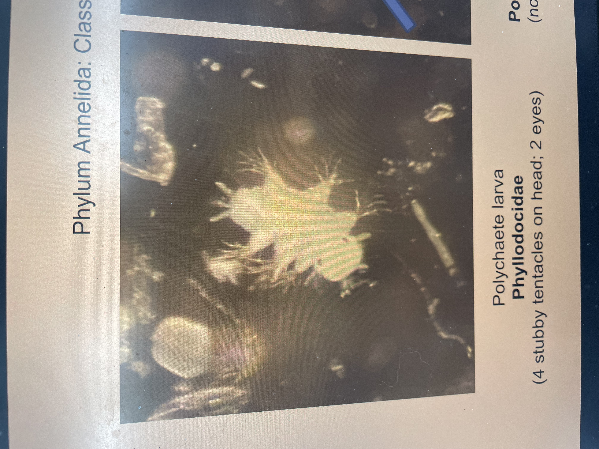
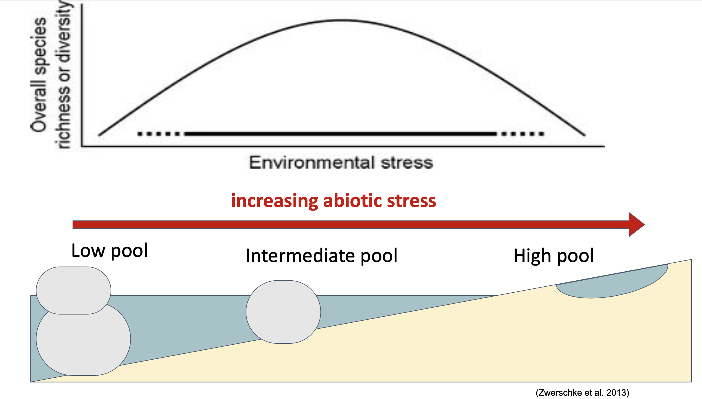
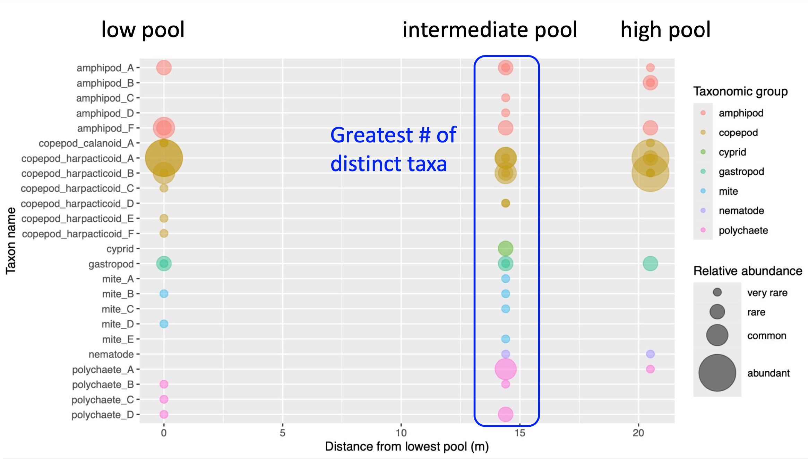

My academic work at Williams-Mystic
Okay, so Williams-Mystic wasn’t all fun trips and sailboats. I did some pretty heavy lifting academically in all four of my classes: science, policy, history, and literature. The program prioritizes independent research, which was both an awesome opportunity and a lot of work! Here, I’ll recap my major projects for each class.
Science
Zooplankton science! Here’s a little worm we found:

We sampled zooplankton from rocky tidepools to examine whether biodiversity changes as we move farther from the shore. This was a two-person project. Our data supported a model posited by other researchers, in which biodiversity peaks at an intermediate level of environmental stress.
Our graphical abstract (please admire my Powerpoint illustration skills): 
Why intermediate? There are multiple pressures faced by zooplankton trying to survive in a shallow tidepool. Consider a pool high up on the shore, one that mixes with the ocean only during high tide. The high pool experiences greater fluctuations in temperature because it spends more time exposed to sunlight. The highly variable environment in the high pool is more stressful for living organisms than a pool exposed only at low tide. Many species cannot survive in this stressful environment. So, you might expect there to be greater diversity as you move closer to the ocean.
But environmental factors like temperature are not the only pressures living organisms face. The environmental stress model (Menge et al. 2002) suggests that predators feed freely when environmental stress is low, reducing biodiversity. (In a tidepool, those predators might be filter-feeding barnacles.) So the maximum biodiversity occurs somewhere in the middle, when environmental stress is low enough for many species to thrive, but high enough for predators to be less effective.
An R plot I made, providing evidence for the above: 
Acknowledgements: I must thank emeritus professor of marine ecology and prominent invasive species expert Dr. Jim Carlton for showing up to help us identify dozens of microscopic creatures. He was key to the now-widespread understanding that marine invasive species spread through ships’ ballast water. If you want to know more about this man, read this post about marine invasions or the excellent book Out of Eden: An Odyssey of Ecological Invasion by Alan Burdick, which eloquently describes him as “a mitochondrion of a man.”
References: Menge et al. 2002, Zwerschke et al. 2013.
Policy
For this class, I wrote a policy brief (a summary of a current topic regulated by the government, plus my own research-backed recommendations for change). I chose to study the effects of land loss in southern Louisiana with a particular focus on Indigenous tribes. Human activities such as oil extraction and levee building have been causing land to sink beneath the water, leaving some places uninhabitable. Repeated hurricanes, increasing in frequency and severity because of climate change, worsen the situation. Indigenous people living on the coast are among the first to be affected. My policy brief examines the work tribes are already doing, including restoring parts of the coast and building storm shelters, and makes recommendations for how the federal and state governments can better support these efforts.
The most important part of this project was talking to the people most directly involved. Crucially, I got to speak with Chief Devon Parfait, a tribal chief and Williams-Mystic alum who is highly knowledgeable about both geoscience and policy. I learned so much from him about working with government and tackling challenging issues.
Check out my presentation slides for some visuals.
History
I wrote two history papers, both of which focused on the clash of values and views between Indigenous people and European settlers in North America, which not only sparked violent conflicts but also physically transformed the landscape.
The first paper (1600s-1700s): When Europeans released livestock (i.e. pigs and cows) into New England, they caused major changes to the ecosystem. Pigs would dig up oyster beds, trample crops, and roam forests, which was an endless nuisance to Indigenous people who had cultivated those areas as key food sources. Disputes over livestock were a frequent source of conflict.
The second paper (1800s-1900s): Puget Sound, where Seattle stands today, was once surrounded by productive wetlands cultivated by Indigenous people for food and resources. From the 1800s-1900s, the U.S. government’s westward expansion enabled European-American settlers to convert coastal wetlands, which they viewed as largely useless, to farms and cities. An interesting shift occurred in the mid-1900s, when larger segments of the American public began to value wetlands and demand their protection. This shift was driven by both environmental activists and Native civil rights activists, who asserted their treaty-guaranteed right to fish in the wetlands by defying state game wardens.
Literature
I analyzed the poem “Whale Fall” by David Baker and its connection to the feeling of grief over climate change. I argued that the poem is about accepting loss by letting go of panic over the things you cannot control. The poem explores this idea in three contexts: debilitating chronic illness, climate change, and the death of a whale. Read the poem here.
I also analyzed the Disney movie Moana! I argued that the movie depicts the relationship between humans and the ocean as deeply personal, suggesting that this relationship can be healed through showing genuine reciprocity. My slides are here.